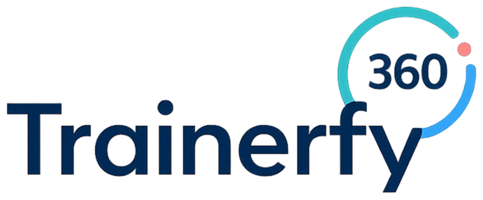
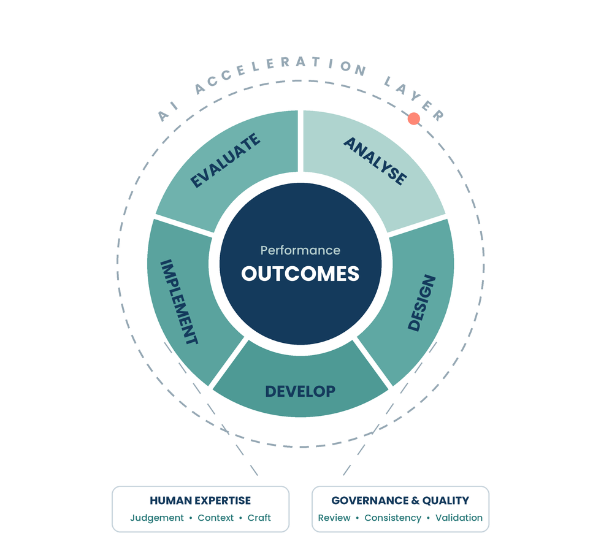

Transforming L&D
Workflows.
See what changes when AI is built into every stage of the design workflow: from manual, time-intensive production to faster, more consistent, AI-enabled delivery, with human judgement and guardrails kept in the loop.
Trusted methodology. Modern workflow.
We didn’t replace it. We reimagined it for the AI era.
The AI-Enabled ADDIE Orbit combines the proven structure of ADDIE with AI-powered workflows, human expertise and quality governance, helping learning teams work smarter, faster and with greater confidence. This guide compares the traditional and AI-enabled workflow across every ADDIE phase, with guardrails throughout.

The reality of traditional instructional design.
Instructional design has never been just about designing learning.
Much of the work happens around the design itself: gathering information, consolidating stakeholder feedback, reviewing legacy content, creating first drafts, updating assets, managing versions and responding to review cycles.
These activities are essential, but they are often manual, repetitive and time-intensive. As learning demands increase, many teams find themselves spending more time managing production than applying instructional design expertise.
What changes with AI.
AI doesn’t replace the instructional design process. It changes how work moves through the process.
Tasks that once required significant manual effort (transcription, summarisation, drafting, formatting and content adaptation) can now be completed in minutes rather than hours.
This allows learning professionals to spend less time on production and administration, and more time on the work that creates value: analysing needs, making design decisions, validating quality and partnering with stakeholders.
How to read the comparison.
The following pages compare how each ADDIE phase is typically performed today versus an AI-enabled approach.
The goal is not to remove human expertise from the process. It is to identify where AI can reduce effort, accelerate drafting and improve consistency, while keeping professional judgement, governance and quality review firmly in the loop.
Traditional vs AI: the ADDIE workflow.
How each ADDIE phase plays out, from manual today to AI-enabled
Humans stay accountable for diagnosis, judgement, ethics and impact; AI accelerates the drafting and synthesis.
| ADDIE phase | Traditional workflow | AI-enabled workflow |
|---|---|---|
| A · Analyse incl. discovery |
|
|
| D · Design |
|
|
| D · Develop content, visuals, media, interactive |
|
|
| I · Implement |
|
|
| E · Evaluate |
|
|
| + Governance & safety across every phase |
|
|
This shows the working governance layer. Fuller controls, data classification, IP, accessibility standards and evaluation, are detailed in the AI-Enabled ADDIE Playbook.

I’ve spent more than 20 years designing learning across corporate, government and higher education.
When AI arrived, I saw talented instructional designers facing a new challenge: not learning the technology, but figuring out how to use it without sacrificing quality, judgement and good learning design.
That’s why I built the AI-Enabled ADDIE Orbit: a practical system, with the free AI Tools for Learning Design and AI Prompts for Learning Design guides, built on the C.R.A.F.T.™ framework, to help L&D teams work smarter with AI without losing what makes great learning design great.